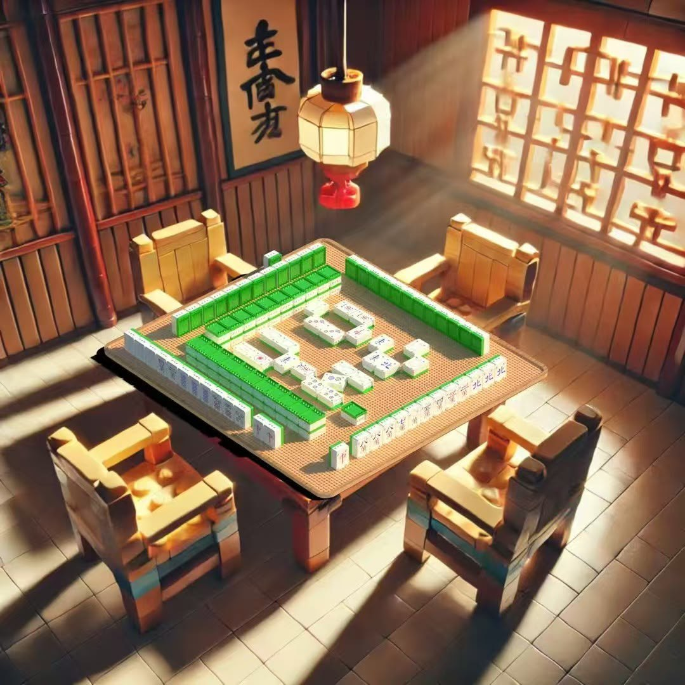

Additional work · Visualisation & presentation
Creative CAD & Visualisation
A small gallery of playful visual exercises beyond my core engineering projects. AI-generated backgrounds are explicitly credited.

LEGO Mahjong
I created the LEGO-style Mahjong model in CAD and placed it against an AI-generated background, adjusting lighting in SolidWorks visualisation to make the scene blend more naturally.
Stylised Tree Visual
A playful personal visual experiment. The background was AI-generated; the image is presented as creative work rather than evidence of a verified CAD tree model.
Transparency: The backgrounds in both works were AI-generated. This gallery focuses on visual presentation, with the Mahjong foreground CAD model and lighting work explicitly attributed.